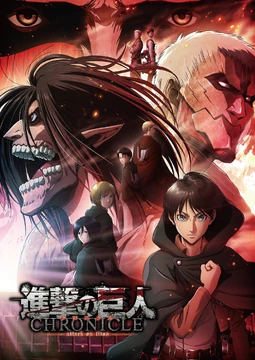

Dekune

ҮЛЭМЖ БИЕТНҮҮДИЙН ДАЙРАЛТ
Тус анимэ нв Японы манга зураач Хажимэ Исаяамагийн бүтээл юм. Тус анимэ нь анх 2009 онд Манга болон цацагдаж байжээ. Тухайн үедээ сүртэй алдар нэртэй болоогүй боловч томоохон студи продакшнуудын анхаарлын төвд тэр даруй орсон юм. Тус хугацаанд 2011 онд мөн адил Новел бүтээл гаргасан нь Энэ бүхний өмнө гэх нэртэй бүтээл юм. Тус бүтээл дээр үндсэн үйл явдлаас 70-жилийн өмнөх үйл явдал гардаг бөгөөд Анжил Аалтонэн гэх эмэгтэйн тухай гардаг аж. Тус эмэгтэй нь үлэмж биетнүүдтэй тулалдах төхөөрөмжийг бүтээх гэж оролдох бөгөөд. Харин зохиолын нөгөө баатар нь нэгэн үл танигдах хүү юм. Тэрбээр титанд идүүлснийхээ дараа дахин төрдөг бөгөөд түүнийг багаас нь шоронд хорих боловч тун удахлгүй зохиолын гол баатрын охин өөр дээрээ авч туршуулын салаанд оруулснаар үйл явдал өрнөх болно.
Инээд түүний дараа 2013 онд ВИТ болон Продакшн АИ ЖИ японы МБС телевизтэй гэрээ хийн тус мангаг анимэ болгох ажилдаа орж гаргасан юм. Гарсан даруйдаа Японыг 1 сарын дотор байдан дагуулж Дэлхий дахинаа 2 сарын дотор байлдан дагуулсан томоохон үйл явдал болсон байдаг.
Үүний дараагаар 2017 онд дараагийн улирал гарахаар болсон бөгөөд бусад анимэ ТВ сувгууд олон анимэнуудаа нэг улиралд зэрэг гаргахгүй хэмээн тооцоолж хойшлуулсан тохиолдлууд ч нилээдгүй болсон. Мэдээж 2р улирал хүмүүсийг маш ихээр татсан байсан түүгээр зогсохгүй 2-р улирал гэхэд аль хэдийн дэлхийн хэмжээний анимэ болж Австралын АНИМЭЛАБ, Кранчролл, Визмедиа гэх томоохон сайт компаниуд эрхүүдийг нь авч удалгүй тоглоом нь хүртэл гарсан байдаг. Зөвхөн 2018 оны 3-р сар л гэхэд үндсэн манга нь хамгийн эрэлттэй болж 74 сая борлогдсон түүхтэй.
Анимэн хувьд
Өөр ертөнц дэхь 100н жил. 100-н жилийн өмнө нь юу байсныг хэн ч үл санана. Гэхдээ л тэдний хамгийн сайн мэддэг зүйл бол Хананы цаана буй үлэмж биетнүүд. Хүн төрөлхтөнд РОЗ, МАРИЯ, ШИНА гэх томоохон хананы дотор аж төрөн амьдрах болно. Хэн эдгээр ханыг бий болгосныг үл мэднэ. Үлэмж биетнүүд нь хүмүүсийг иддэг бөгөөд хүн төрөлхтөн үе үе судалгаа хийхээр хананаас гарах болно. Мэдээж тус гарч буй цэргийн салаа нь тусгай ТУРШУУЛЫН салаа юм. Үндсэн үйл явдал Эрэн Иэгэр гэх хүүгийн эргэн тойронд өрнөх болно. Нэгэн өдөр гэнэт Хананаас том үлэмж биетэн гарч ирэн ханыг цөмлөх болно. Ингэснээр үлэмж биетнүүд хотод орж ирэн бүгд зугтах хэрэгтэй болов. Гэвч нурангид Эрэний ээж дарагдаж үлэмж биетнэнд идүүлснээр үйл явдал эхлэх юм.